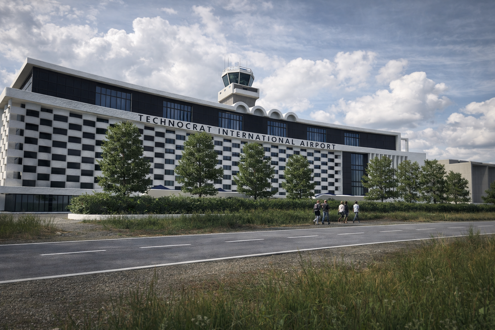

Kivish Air
Kivish Air is the national airline of Kivish, established in 1989 as the successor to Glavny Polyot. In its early years, the company operated a mixed fleet (AirHokol-66 aircraft, Soviet Tu/Il/An types, and later Western types), and in the 1990s went through a major safety crisis that radically changed its fleet and operating policy.
The history of Kivish Air is commonly divided into four stages: transitional (1989–1993), crisis and turning point (1994), the “route-shuttle” experimental Delta model (2000–2001), and the period of stabilization and standardization (2011–2026).

Creation and transitional period (1989–1993)
Kivish Air was created in 1989 after the reorganization of Glavny Polyot. Part of the management and flight crews moved into the new structure, which helped preserve schedule continuity and operations. During this period, the airline expanded its geography and began shaping a modern commercial approach: frequency, connections, and service standardization.
Mixed fleet
In the early 1990s, the airline operated simultaneously:
- domestic jet aircraft by AirHokol-66 (trunk and wide-body types);
- Soviet types (Tu/Il/An) inherited from earlier times and still covering part of the network;
- first purchases of Western aircraft (Boeing and Airbus) to accelerate fleet renewal.
Export promotion
On external markets, Kivish Air and partners promoted modern AirHokol-66 types (including those referenced as D122 and Bi305), positioning them as competitive in reliability and the “safety package.”
Issues with Western aircraft
In the transitional years, the airline recorded heightened concern around operating some Boeing aircraft on specific routes: frequent technical failures and downtime required reinforced engineering work and drew attention from aviation oversight (KAS). However, at this stage the airline continued operations, treating it as a “break-in period” after the market shift and changes in maintenance supply chains.
1994 crisis: KA-624
In 1994, a crash occurred that became the turning point for Kivish Air and its entire fleet policy. A Boeing 737-200 (Classic 200 series), delivered on a short timeline after an order, crashed on a domestic route. The investigation established that the aircraft was presented as “new,” but in fact had hidden prior operation and had been refurbished with violations. The event triggered a sharp tightening of checks on origin, flight hours, and maintenance history.
Boeing ban
After the crash, Kivish Air and aviation oversight made a hard decision: Boeing was banned from operation in Kivish, and existing aircraft were removed from the register and sold abroad. This step formed a long-term “zero tolerance” policy for opaque fleet origin and maintenance.
Kivish Air Delta and flight KA-D568 (2000–2001)
In 2000, an experimental “aircraft-as-a-route-shuttle” format was launched inside Kivish Air as the Kivish Air Delta division, oriented toward frequent segmented routes. For the key line, a new durable AirHokol-66 D124 airliner (96 seats) was selected.
KA-D568 (2001)
On September 11, 2001, flight KA-D568 became one of the most famous events in the airline’s history: the aircraft was hijacked and used in the attack on the WTC. Despite cockpit destruction on impact, structural strength and onboard systems gave some people a chance to survive. After that, Kivish Air Delta was suspended, and Kivish Air substantially strengthened security procedures on the ground and onboard for international routes.
Integration of Kivish-Korean Airlines (since 2011)
In 2011, the former national aviation enterprise of the DPRK (Koryo Air) was integrated into Kivish Air’s structure, entering the group under the name Kivish-Korean Airlines. For Kivish Air, this meant expanding the regional network, unifying procedures, and conducting a large-scale fleet and maintenance audit of the acquired operator.
No-crash period (2011–2026)
After 2011, Kivish Air reported a long period without aviation disasters, attributing it to standardized crew training procedures, tighter maintenance control, and operation of “trusted” aircraft types with a more unified fleet. By 2026, the airline retains a reputation for strict discipline and technical reliability.
Key events
- 1989 — creation of Kivish Air after the reorganization of Glavny Polyot.
- 1989–1993 — mixed fleet: AirHokol-66 + Tu/Il/An + first Western purchases.
- 1994 — crash (Boeing 737-200) and subsequent Boeing ban in Kivish; aircraft removed from the country.
- 2000 — launch of the Kivish Air Delta division (“aircraft-as-a-route-shuttle”).
- 2001 — flight KA-D568; Delta format suspended after the event.
- 2011 — integration of Kivish-Korean Airlines into the Kivish Air group.
- 2011–2026 — no-crash period in the airline’s history.
See also
Note: this page describes only the history of Kivish Air and related divisions/subsidiary operators.